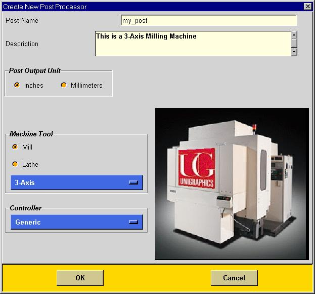
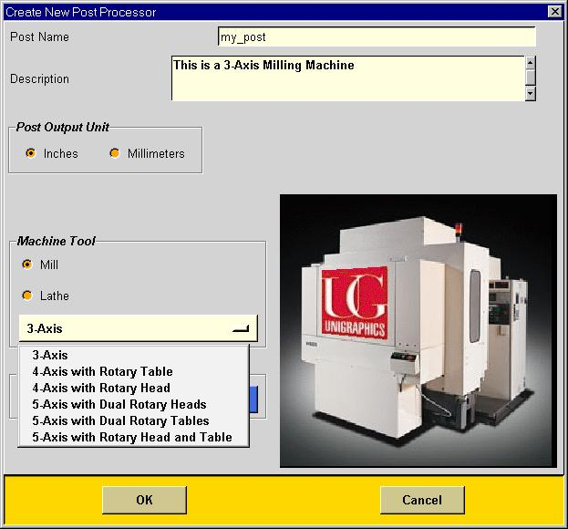

my_machine_tool.def -- This file defines all the static information for the post. This includes formats, address and NC blocks. The format of this file is a special syntax created by UG. This file is used by UG/Post to postprocess the tool path and generate NC code.
my_machine_tool.tcl -- This file determines the blocks that need to be output from events that are generating by UG Post. This file uses the Tcl language and is completely created by Post Builder every time you save your post. UG/Post also uses this file at run time to generate NC code.
my_machine_tool.pui -- This file is used by post builder only and not by UG/Post. This file contains static information on how to write out the .tcl file. Although UG/Post does not need this file, it must be present in the same directory as the .tcl and .def files in order to edit your post.
By default UG/Post Builder will create your post in the directory that you started UG/Post Builder. Use the Save As option in the file dialog to save your post in the directory of your choice. In order to use your postprocessor in Unigraphics you must add an entry to your template_post.dat file in your current postprocessor directory.
Either select the new file icon or select new in the file dialog. You then will need to make several initial choices from the Create New Postprocessor dialog.

At this point you must select the name of your postprocessor or use the default name.
You can optionally enter a text description of your postprocessor.
You can specify whether the output will be inches or millimeters. If you select inch, all coordinate output and formats will be inches. If you specify metric, all coordinate output will be in millimeters. All of the default parameters such as tolerances, minimums and maximums will be based upon the output units.
You must select a machine type.
Once this option is selected you may not change it again for this postprocessor.
The choices are:
· MillThis option defines your machine as a mill type. This means you have three linear axis (Cartesian X, Y and Z) and up to two rotary axis. This option has additional choices to define the axes are to be used.

You must now select a basic controller type. At present only generic is available. The basic default options are set to a Fanuc 6M.